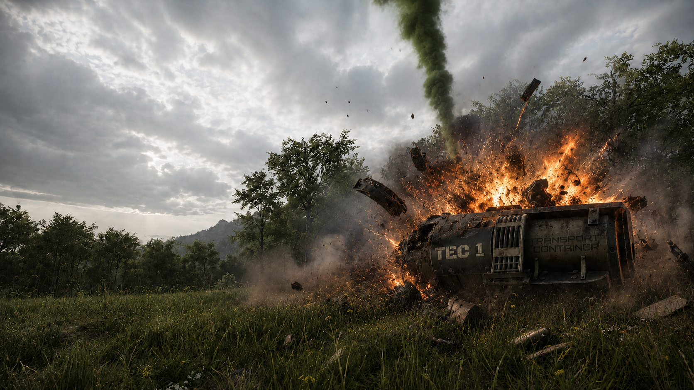

Largages

Une cargaison tombée du ciel
De temps à autre, le ciel d'Arvelys RP se fend du bruit d'un appareil inconnu.
Un conteneur descend lentement sous parachute, chargé de ressources précieuses. Nourriture, matériel, équipement, objets rares... personne ne sait vraiment qui organise ces largages, ni pourquoi ils continuent d'avoir lieu plus de dix ans après la guerre.

Temps, risques et récupération
Sur Arvelys RP, un largage est susceptible d'apparaître environ toutes les 3 heures. Une fois repéré, le conteneur met encore près de 2 minutes à atteindre le sol avant de pouvoir être récupéré.
Ces cargaisons ne restent pas éternellement accessibles. Après environ 25 minutes, le conteneur s'autodétruit. Son contenu est alors définitivement perdu. Toute personne se trouvant encore dans un rayon de 100 mètres risque de connaître le même sort.

Ne laisser aucune trace
Leur autodestruction est peut-être un moyen de ne laisser aucune trace... ou de s'assurer que personne ne découvre ce qu'elles transportaient réellement.
Dans le même temps, le danger vient principalement des autres survivants qui pourraient avoir eu la même idée que vous.
Une opportunité dangereuse
Un largage est visible de loin, convoité par beaucoup et ignoré par très peu. Certains viendront dans l'espoir de récupérer quelques ressources précieuses. D'autres n'auront qu'un seul objectif : attendre que quelqu'un d'autre fasse le travail à leur place.
Chaque cargaison peut ainsi devenir le théâtre d'échanges, d'alliances temporaires, de négociations... ou d'affrontements. Dans un monde où les ressources sont rares, chacun doit décider jusqu'où il est prêt à aller pour mettre la main sur son contenu.
Un largage peut changer votre journée.
Ou y mettre fin.